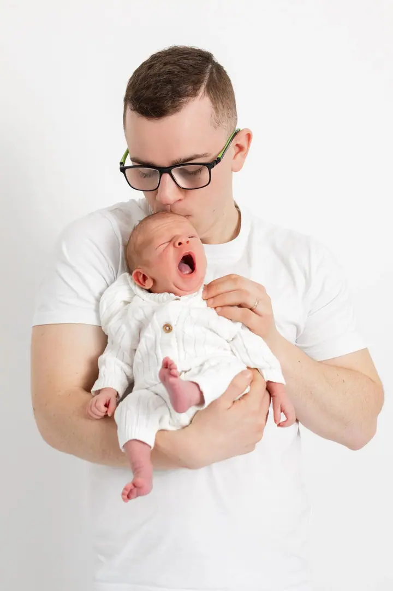
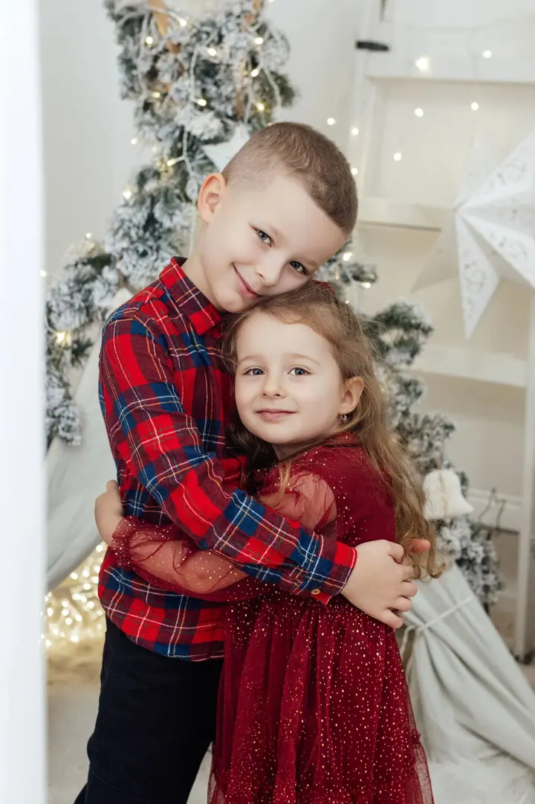
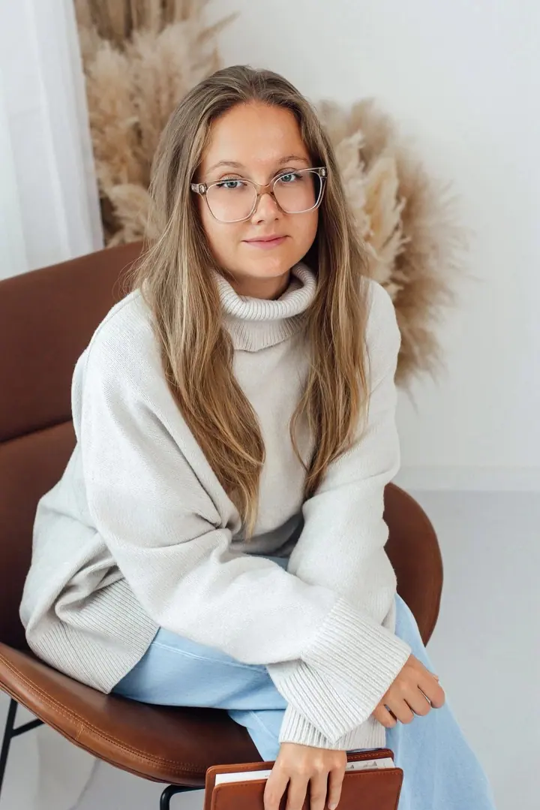
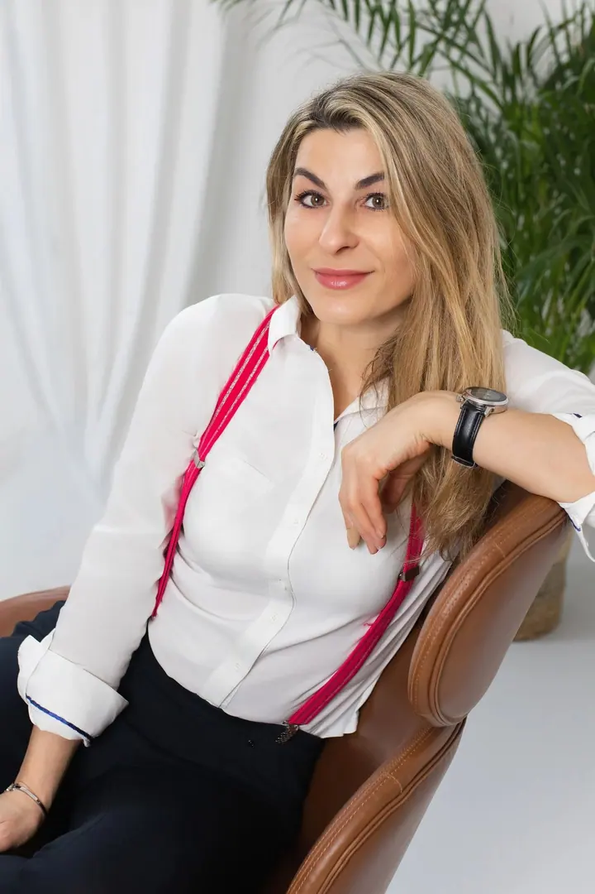
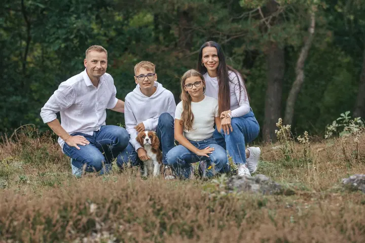
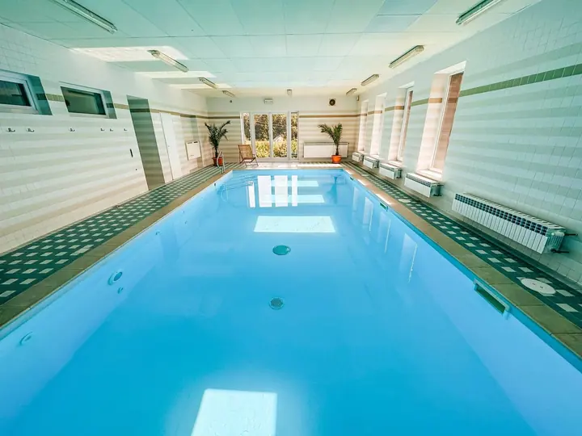

Rodinné focení
Přirozené momenty, smích, objetí a vzpomínky, které zůstanou. Fotím v ateliéru i venku v přirozeném světle.





Jmenuji se Petra Popadincová a fotím rodiny, maminky v očekávání i ženské portréty. Ateliér mám v Úholičkách, 15 minut od Prahy, ale ráda přijedu i k vám domů nebo vyrazíme ven do přírody.
Více o mně
„Zachycuji emoce i detaily, na které se nezapomíná.“
— Petra Popadincová
Přirozené momenty, smích, objetí a vzpomínky, které zůstanou. Fotím v ateliéru i venku v přirozeném světle.
Fotím v ateliéru, v exteriéru nebo u vás doma, abych zachytila očekávání a krásu tohoto období. Šaty na focení vám ráda zapůjčím.
Ženské portréty, branding, osobní vizuály i jemný glamour. Na přání domluvím i vizážistku.
Fotím produkty pro e-shopy, tvůrce a malé značky, od čistého bílého pozadí po stylizované a lifestyle snímky. Připravím i krátká videa a Reels pro sociální sítě.
Fotím s důrazem na přirozenost, jemnost a emoci. Ať jde o láskyplný okamžik mezi rodičem a dítětem, elegantní portrét ženy nebo precizně nasvícený produkt připravený k prodeji, chci, aby fotky působily opravdově.
Ve svém ateliéru v Úholičkách pracuji s jemným přirozeným světlem, neutrálními tóny a přírodními dekoracemi. Na těhotenské a portrétní focení vám zapůjčím šaty a na přání domluvím i vizážistku. Miminka ráda fotím také u vás doma, kde se celá rodina cítí nejlépe.
Kromě rodin a portrétů fotím produkty pro e-shopy, tvůrce a malé značky. Nabízím styling, poradenství k vizuální identitě a obsah pro sociální sítě včetně krátkých videí a Reels.
Napište mi nebo zavolejte a společně vybereme typ focení a místo. Termín je rezervovaný po uhrazení zálohy 500 Kč, která se odečítá z konečné ceny.
Fotíme v ateliéru v Úholičkách, venku v přirozeném světle nebo u vás doma. Nikam nespěcháme, aby se všichni cítili dobře.
Do 7 pracovních dnů vám pošlu náhledy v online galerii a vy si vyberete své oblíbené.
Upravené fotografie odevzdávám do 14 dnů od výběru přes galerii Zonerama, kde si je stáhnete v plné kvalitě.
Balíček MINI za 2 500 Kč zahrnuje 45 minut focení a 5 upravených fotografií, BASIC za 3 500 Kč 60 minut a 10 fotografií, STANDARD za 4 500 Kč 90 minut a 15 fotografií. Každou další upravenou fotku můžete dokoupit za 200 Kč.
Ateliér mám v Úholičkách, 15 minut od Prahy. Doprava na focení venku je zdarma v rámci Prahy, Roztok a Úholiček, mimo tyto oblasti účtuji 8 Kč/km.
Nemusíte. U balíčků BASIC a STANDARD je zapůjčení šatů v ceně, u newborn focení v ateliéru půjčuji textilie a rekvizity. Na přání domluvím také vizážistku za 1 500 Kč.
Termín je možné jednou bezplatně přesunout, a to do 2 měsíců od původního data. Dejte mi prosím vědět co nejdříve, termíny se rychle plní.